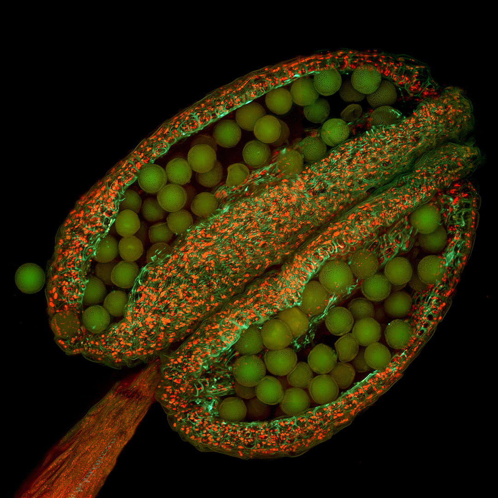

World Bee Day 2021: Research Topics to Build Back Better for Bees
aperture':'0','credit':'','camera':'','caption':'','created_timestamp':'0','copyright':'','focal_length':'0','iso':'0','shutter_speed':'0','title':'','orientation':'0'}' data-image-title='shutterstock_420380341-1' data-large-file='https://frontiersinblog.files.wordpress.com/2021/05/shutterstock_420380341-1.jpg?w=940' data-medium-file='https://frontiersinblog.files.wordpress.com/2021/05/shutterstock_420380341-1.jpg?w=300' data-orig-file='https://frontiersinblog.files.wordpress.com/2021/05/shutterstock_420380341-1.jpg' data-orig-size='998,561' data-permalink='https://blog.frontiersin.org/shutterstock_420380341-1/' sizes='(max-width: 998px) 100vw, 998px' src='https://frontiersinblog.files.wordpress.com/2021/05/shutterstock_420380341-1.jpg' srcset='https://frontiersinblog.files.wordpress.com/2021/05/shutterstock_420380341-1.jpg 998w, https://frontiersinblog.files.wordpress.com/2021/05/shutterstock_420380341-1.jpg?w=150 150w, https://frontiersinblog.files.wordpress.com/2021/05/shutterstock_420380341-1.jpg?w=300 300w, https://frontiersinblog.files.wordpress.com/2021/05/shutterstock_420380341-1.jpg?w=768 768w'>
Posted On: 2021-05-17T00:00:00

Content Date: 2021-05-17
Download Date: 2021-07-10
Document ID: L0C04F155